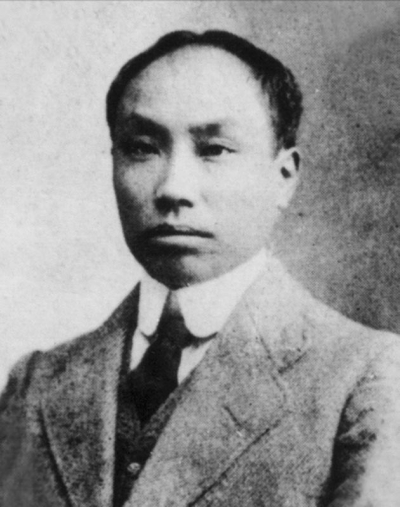
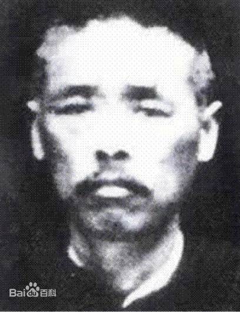
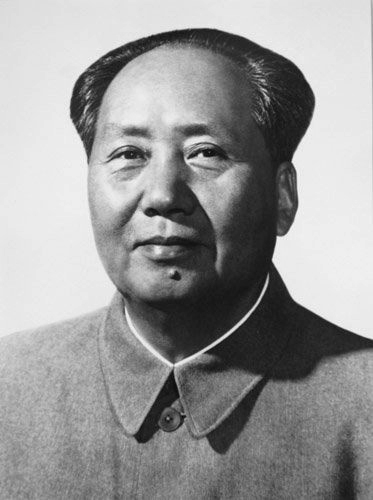
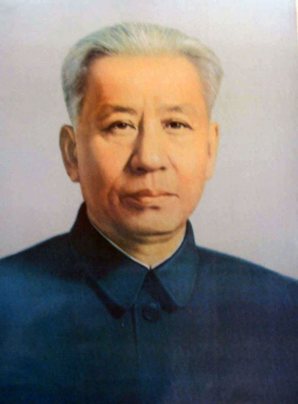
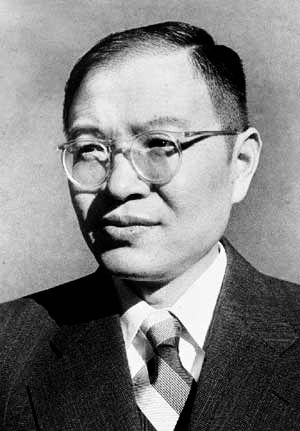
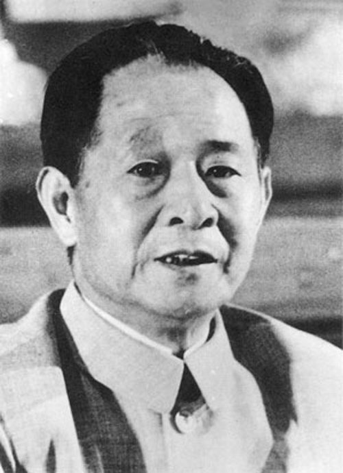
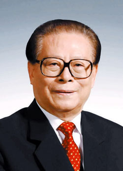
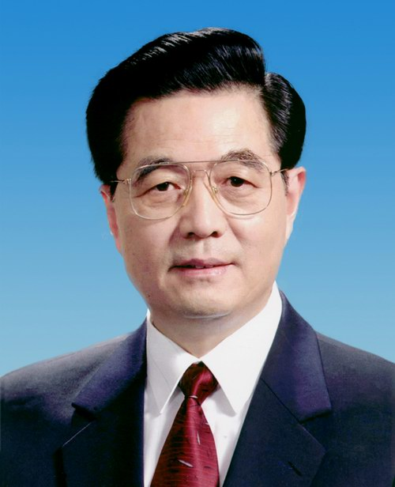
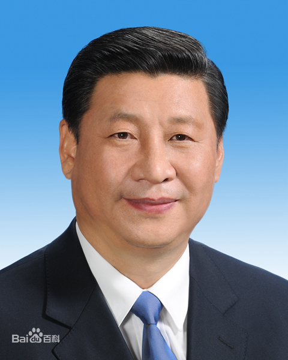

功勋人物

陈独秀（1879.10.9-1942.5.27）
安徽怀宁人，新文化运动的倡导者、发起者和主要旗手，
“五四运动的总司令”，中国共产党的主要创始人之一和党早期主要领导人 。

向忠发(1880一1931)
工人出身。1922年8月担任汉阳钢铁厂工会副委员长，
12月任汉冶萍公司总工会副委员长。同年加入中国共产党，后从事码头工人运动。
1931年6月22日，在上海被国民党当局逮捕，随即叛变。24日被国民党当局枪杀于上海龙华。

毛泽东（1893.12.26-1976.9.9)
湖南湘潭人。中国人民的领袖，伟大的马克思主义者，无产阶级革命家、
战略家和理论家，中国共产党、中国人民解放军和中华人民共和国的主要缔造者和领导人，
政治家 ，军事家 ，诗人，书法家。

周恩来（1898.3.5-1976.1.8）
原籍浙江绍兴，1898年3月5日生于江苏淮安。1921年加入中国共产党，是伟大的马克思主义者，
伟大的无产阶级革命家、政治家、军事家、外交家，党和国家主要领导人之一，
中国人民解放军主要创建人之一，中华人民共和国的开国元勋，
是以毛泽东同志为核心的党的第一代中央领导集体的重要成员

刘少奇（1898.11.24-1969.11.12）
生于湖南省宁乡县，伟大的马克思主义者，伟大的无产阶级革命家、
政治家、理论家，党和国家主要领导人之一，中华人民共和国开国元勋，
是以毛泽东同志为核心的党的第一代中央领导集体的重要成员。

张闻天（1900.8.30-1976.7.1）
上海南汇人，中国共产党的重要领导人之一，
理论宣传和干部教育工作中成绩卓著的领导人之一。

胡耀邦（1915.11.20-1989.4.15）
湖南浏阳人，久经考验的忠诚的共产主义战士，
伟大的无产阶级革命家、政治家，我军杰出的政治工作者，
长期担任党的重要领导职务的卓越领导人。

江泽民（1926.8.17）
江苏省扬州市人。1943年起参加地下党领导的学生运动，
1946年04月加入中国共产党，1947年毕业于上海交通大学电机系。
曾任中国共产党中央委员会总书记，中国共产党中央军事委员会主席，
中华人民共和国主席，中华人民共和国中央军事委员会主席。

胡锦涛（1942.12）
安徽绩溪人，1964年4月加入中国共产党，
1965年7月参加工作，清华大学水利工程系河川枢纽电站专业毕业，
大学学历，工程师。曾任中国共产党中央委员会总书记，中华人民共和国主席，
中共中央军事委员会主席，中华人民共和国中央军事委员会主席，中央政治局常委。

习近平（1953.6）
陕西富平人，1969年1月参加工作，1974年1月加入中国共产党，
清华大学人文社会学院马克思主义理论与思想政治教育专业毕业，在职研究生学历，
法学博士学位.现任中国共产党中央委员会总书记，中共中央军事委员会主席，
中华人民共和国主席，中华人民共和国中央军事委员会主席。